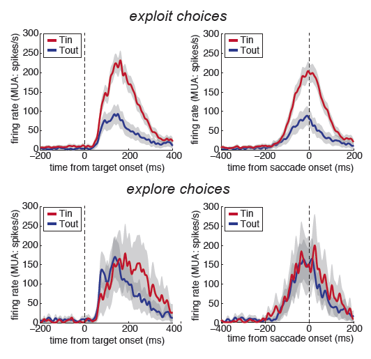
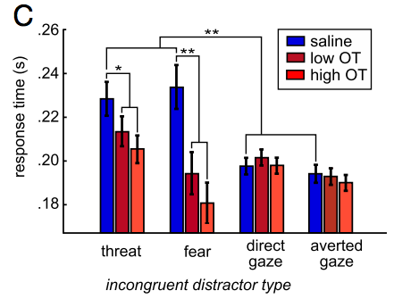

My current work asks:
how does exploration shape prefrontal attention network states?

We know from a large number of studies that neurons in the frontal eye fields enhance their activity when the target for attention or gaze is within their response field. This target selectivity is a hallmark of the frontal eye field (you can see it for yourself in the separation between the red and blue lines in the top row of the figure to the right). Critically, while most laboratory tasks require that we select actions that maximize immediate reward, in nature, action can serve a variety of functions. Actions can result in immediate reward, just like in the lab, (in which case they are "exploit" actions), or they can also be used to learn about new or uncertain things in the world ("explore" actions). However, instead of thinking about how we pick whether each individual action should be an explore action or an exploit action, I like to think about how we can be in different behavioral states that predisponse us to perform particular actions: we can be in a state where we're making a lot of exploit choices, in which case we're being exploitative (and doing really well at most laboratory tasks) or we can be in a state where we're making a lot of explore choices, in which case we're being exploratory, and probably learning a lot of new things about the world around us via taking actions that we wouldn't even consider if we were trying to maximize immediate reward. We know a lot about what prefrontal target selectivity looks like during exploitation, but does target selectivity change during exploration?
The short answer is that target selectivity is largely absent during exploration (compare the bottom row of the figure to the top). The long answer is that single-trial analyses suggest that the frontal eye field undergoes a conformational change in its network state during exploitation modes. Transitions into exploration disrupt this network state, which then has to reform slowly as exploitation begins again. It turns out that this hallmark of frontal eye field activity may actually depend on the exploitative behavioral modes required by typical laboratory tasks!
I have also figured a few things out:
pupil size predicts distraction:
Pupil size is a peripheral index of autonomic arousal and norepinephrine tone, a neuromodulator that coordinates network states across large swaths of the brain. One simple way to regulate the balance between top-down and bottom-up influences on attention might be to adjust these pupil-linked mechanisms, thereby affecting distributed network states. I found that increasing pupil size predicted incresed distractibility, providing indirect support for the hypothesis that norepinephrine tone makes attention more labile. Even more intriguingly, pupil size predicted a specific increase in the attentional capture of social distractors. Thus, increasing pupil-linked arousal may not simply make attention more labile, but instead adjust the balance between top-down priorities and the stimuli that we are evolutionarily predisposed to look at. We reported these observations in a recent paper.
the anterior cingulate cortex predicts adjustments in pupil-linked arousal:
In response to both errors and conflicting, task-irrelevant stimuli, I noticed that monkeys exhibited down-regulations of pupil-linked arousal on subsequent trials. It turned out that single neurons in dorsal anterior cingulate cortex (dACC), a region long-known to respond to both errors and conflict, also predicted these task-facilitating adjustments. In fact, had I not also measured these adjustments in pupil size, I would have overestimated the amount of conflict and error signals in dACC. These arousal-adjustment signals may contribute to number of observations in this still poorly understood cortical region. (This work is recently in press at Neuron! You can check it out here.)
oxytocin blunts social attention:

Oxytocin (OT) is a neuromodulator that promotes a lot of different social behaviors. Critically, across different people, OT can have very different effects - making one person more trusting, but another less trusting, for example. In a series of experiments, I found that OT reduces the amount of attention we pay to social actors, particularly important ones like emotional or high status others. Because oxytocin is released during positive social interactions, I propose that oxytocin may be a mechanism through which positive social interactions can reduce our vigilance for additional social information, thereby permitting us to stop simply responding to the vagaries of external social world, and to instead start expressing our own unique social selves. (I have a few relevant publications on this topic, including a review).
|